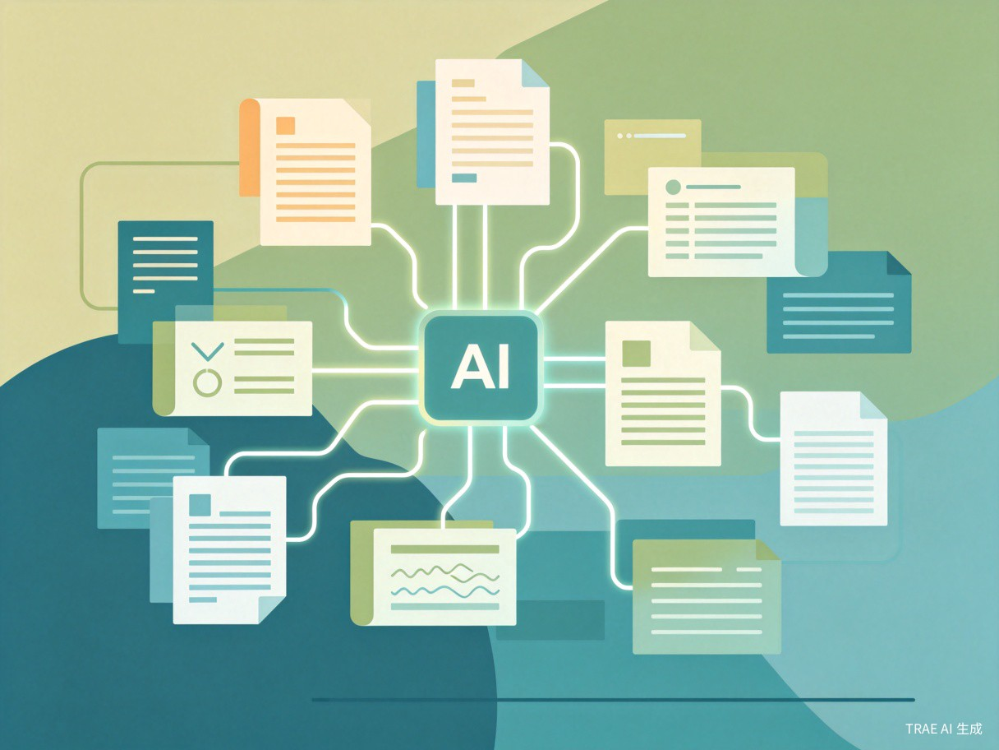

创意介绍
本创意为 AI智能学习复盘助手网页工具，主要解决学生、备考人群课后学习内容杂乱、复盘效率低下，无法快速梳理知识点、总结学习漏洞的核心问题。
日常学习中，多数人课后耗时许久整理笔记、复盘错题，却难以精准抓取重点，学习效率极低。基于这一普遍学习痛点，我们萌生了制作轻量化AI学习复盘工具的想法，助力轻量化高效学习。
核心功能模块
学习内容录入
支持文字、图片、文档等多种格式快速录入课堂笔记与刷题记录。
AI智能梳理
基于大模型能力，自动提取知识点、构建知识图谱、梳理逻辑结构。
错题总结
智能识别错题类型，归纳错因，生成针对性强化练习建议。
复盘报告生成
一键生成日/周/月学习复盘报告，量化学习成果，定位薄弱环节。

目标用户及痛点
面向哪些用户
核心用户为 中小学生、初高中备考学生、考研考公等各类自主学习人群，以及需要日常复盘学习内容的学习者。无论是课堂学习还是自主备考，均可通过本工具实现高效复盘。
使用场景
课后笔记整理
课后快速录入笔记，AI自动提取重点、补充关联知识点。
刷题错题复盘
刷题结束后自动归类错题，分析错因，生成专项突破计划。
每日/每周总结
定期生成学习复盘报告，回顾学习轨迹，调整学习策略。
考前知识点梳理
考前快速回顾核心知识图谱，精准定位需强化的薄弱环节。
当前痛点
- 传统人工复盘耗时费力：手动整理笔记、归类错题占用大量课后时间，挤压实际学习时间。
- 笔记杂乱无章，重点模糊：缺乏结构化整理方法，复习时难以快速定位核心内容。
- 专业工具付费门槛高：市面上多数学习工具的复盘功能需付费解锁，操作繁琐、适配性差。
- 缺乏科学复盘方法：多数学习者不懂如何精准定位学习短板，长期效率低下，难以稳步提升。
价值与意义
本次创意核心聚焦 效率提升 与 社会价值 两大维度，力求在解决个体学习痛点的同时，创造更广泛的社会效益。
效率提升层面
- 工具依托 AI智能能力，一键完成学习内容梳理与复盘总结，大幅缩短学习者整理笔记、复盘错题的时间。
- 降低学习成本，有效提升自主学习效率，让学习更具针对性，把时间花在真正需要突破的知识点上。
- 通过知识图谱与结构化梳理，帮助学习者建立系统化的知识框架，告别碎片化记忆的困境。
社会价值层面
- 工具完全 免费轻量化、无广告无门槛，适配全年龄段学生，让每一个学习者都能平等享受AI技术红利。
- 为广大普通学习者提供便捷的科学学习工具，助力培养良好的学习复盘习惯，弥补轻量化免费学习复盘工具的市场缺口。
- 普惠广大学生群体，尤其为资源相对匮乏地区的学生提供高质量的学习辅助手段，促进教育公平。
产品使用流程
整个使用流程简洁直观，四步即可完成从内容录入到复盘报告的全链路：
录入内容
上传笔记、错题或学习资料
AI梳理
自动提取知识点与结构
错题分析
定位薄弱点与错因
生成报告
输出复盘报告与建议
技术实现方案
本产品基于 TRAE Work 快速搭建，采用轻量化网页架构，无需下载安装，浏览器即开即用。核心技术栈如下：
前端框架
纯HTML/CSS/JS轻量实现，加载极速，兼容各类设备与浏览器。
AI能力
接入大语言模型API，实现内容理解、知识提取、报告生成等核心能力。
数据安全
本地优先存储策略，用户学习数据可控，隐私安全有保障。
多端适配
响应式设计，完美适配PC、平板、手机等各类屏幕尺寸。